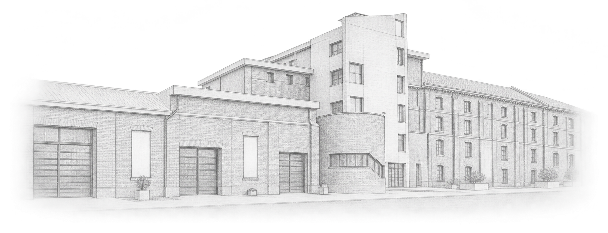

Nuestra misión
Fortalecer la actividad productiva local y regional mediante una formación de calidad y servicios técnicos y tecnológicos que impulsen su desarrollo y capacidad de innovar.
Conocé quiénes somos, qué nos guía y cómo construimos nuestra relación con la comunidad.
El Instituto Tecnológico El Molino es un proyecto educativo de articulación público-privada ubicado en Esperanza, Santa Fe.
Su actividad combina la formación práctica con servicios destinados a acompañar el desarrollo de las pequeñas y medianas empresas de la región.
A través de tecnicaturas, formación profesional y capacitaciones, el instituto vincula el aprendizaje con las necesidades del mundo del trabajo.
Conocé nuestra formación
Fortalecer la actividad productiva local y regional mediante una formación de calidad y servicios técnicos y tecnológicos que impulsen su desarrollo y capacidad de innovar.
Alcanzar una posición de liderazgo local y regional en la formación de personas y en el apoyo al sector productivo, mediante servicios y asesoramiento técnico.
| Cargo | Nombre | Institución representada |
|---|---|---|
| Presidencia | Víctor Sarmiento | CICAE |
| Vicepresidencia | Andrés Grenón | Municipalidad de Esperanza · Departamento Ejecutivo |
| Secretaría | María Victoria Nagel | Municipalidad de Esperanza · Departamento Ejecutivo |
| Prosecretaría | Diego Alonso | Sociedad Rural de Las Colonias |
| Tesorería | Ana M. Marnico | CICAE |
| Protesorería | Hugo Ortega | Municipalidad de Esperanza · Departamento Ejecutivo |
| Vocalía 1 | Hugo Enrique Weidmann | CICAE |
| Vocalía 2 | Jorge Allín | CICAE |
| Vocalía 3 | Eduardo Weidmann | Sociedad Rural de Las Colonias |
| Vocalía 4 | Nicolás Cardozo | Municipalidad de Esperanza · Departamento Ejecutivo |
| Vocalía 5 | Nicolás Kinen | Municipalidad de Esperanza · Concejo Deliberante |
| Vocalía 6 | Andrea Voelkli | Municipalidad de Esperanza · Concejo Deliberante |
Si la tabla no entra en tu pantalla, deslizala horizontalmente para consultar todas las columnas.
Recorré los acontecimientos que marcaron la trayectoria del instituto entre 1998 y 2023, reunidos con motivo de su 25.º aniversario.
Explorar el recorrido históricoConocé los espacios, talleres y laboratorios destinados a la formación y las actividades del instituto.
Conocer los espaciosDescubrí los vínculos del ITEC con instituciones, empresas y organizaciones de la región.
Explorar la vinculaciónEnterate de las novedades, actividades y proyectos de nuestra comunidad educativa.
Ver las noticias